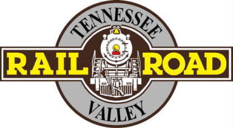

Locomotives In Depth
Intro
Engines of TVRM goes over the history of the Museum locomotive collection. The museum has well over 12 steam locomotives and over 30 diesels locomotives throughtout it's existence many have got on to pastures new, some have been scrapped, and some have been there since they arrived. The museum started in 1960 as the Tennessee Valley Chapter of the National Railway Historical Society and founded in 1961 as the Tennessee Valley Railroad Museum with founders Paul H. Merriman and Bob Soule. At the time of starting the museum didn't have any land of their own to call home it just rented space in the Western Union pole yard and space at the Southern Railway's Terminal Station in Chattanooga. The first rebuilt ever done by TVRM was to their first locomotive the little tank engine called 3 Spot, which was done at Terminal Station. Now with over 60 years of history at the museum let's look back at the history of the locomotives of TVRM.
